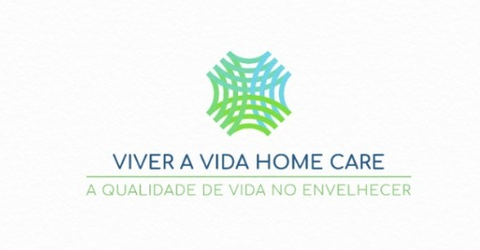

Quem somos
A Viver a Vida Home Care – Plano de acompanhamento profissional para Idosos Desde 1999 a Viver a Vida Home Care no mercado, com uma visão de futuro voltada na melhor forma de envelhecimento dos nossos clientes, a Viver a Vida HC Autogestão em acompanhamento, lazer e atividades que promovem a saúde é uma das mais importantes operadoras de planos de cuidadores de idosos do Brasil para servidores públicos. Em sua trajetória, a empresa tornou-se referência no mercado de acompanhamento suplementar ao investir de forma pioneira num modelo assistencial focado na promoção da saúde, prevenção de doenças e na melhoria da qualidade de vida dos assistidos. Sem fins lucrativos, a Viver a Vida Home Care reverte todos os seus recursos para a assistência integral dos seus beneficiários. É a operadora que agrega o maior número de idosos, com a maioria da carteira de beneficiários composta por pessoas a partir de 60 anos.
Prezar pelo bem-estar e segurança é importante em qualquer fase da vida. Especialmente para as pessoas com mais idade e os cuidados nessa etapa da vida se tornam ainda mais urgentes. Somos uma empresa que saiu à frente com uma proposta inovadora.
A Bem Viver Home Care é uma instituição especializada em serviços de home care e cuidados para a terceira idade, que busca através dos seus serviços, melhorar a qualidade de vida dos seus clientes ofertando aos mesmos um atendimento personalizado e humanizado, trazendo ao atendimento domiciliar comumente oferecido, serviços que ampliam e acrescentam grandes benefícios a qualidade de vida.
Nossa equipe, formada por profissionais qualificados, está apta a prestar a mais completa assistência para a melhoria da qualidade de vida e reabilitação da pessoa cuidada. Ofertamos um serviço de excelência e por isso somos reconhecidos como empresa referência em nossa cidade. Estes serviços abrangem saúde, bem-estar e lazer, e vão desde a limpeza e manutenção da casa, à companhia em atividades do cotidiano, manutenção da saúde física, auxílio nas rotinas diárias, desenvolvimento da autonomia de forma segura, estímulo das funções cognitivas, e ações de práticas alimentares saudáveis. A Bem Viver Home Care ainda dispõe em nossa sede, de um espaço físico que promove diversas atividades que contribuem no convívio comunitário com oficina de teatro, jogos de memória e terapia ocupacional.
NOSSO TRABALHO:
Conheçam o nosso trabalho através das mídias digitais, e pelos principais canais de comunicação e informe-se sobre os nossos planos, faça já um orçamento, temos certeza que você encontrará um pensado especialmente para você. Somos a melhor opção para o seu familiar.